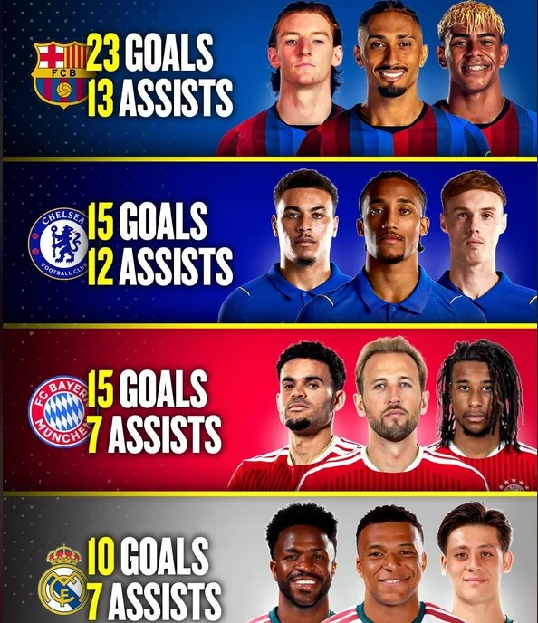
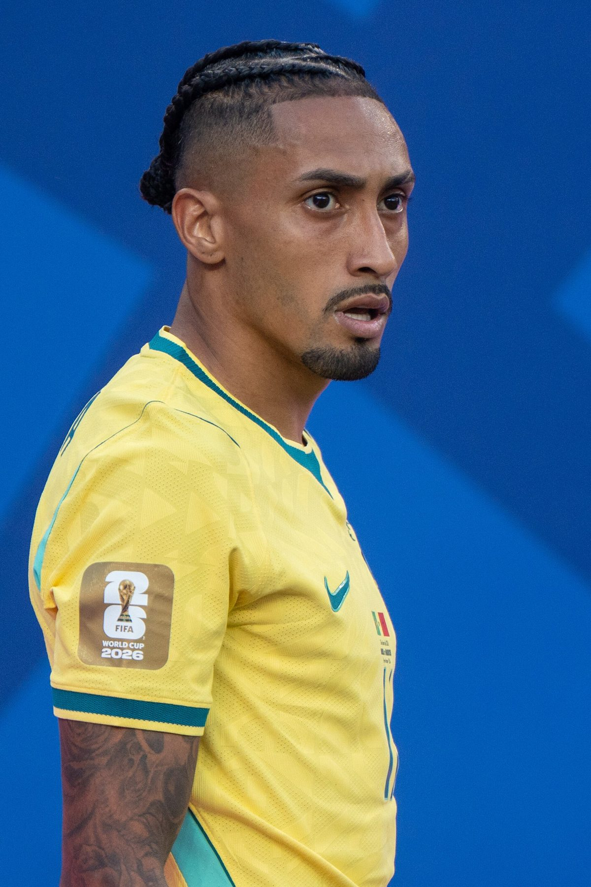
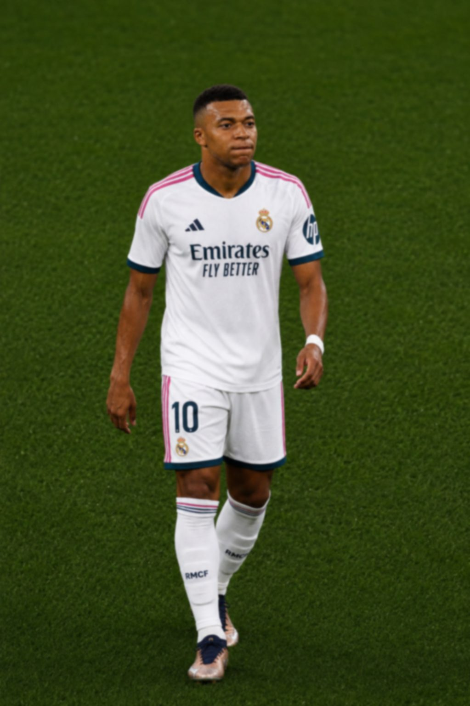

Front three face-off
Three attackers, one job: goals. We counted every goal and assist from Europe's most famous forward lines this season, to find out which trio really is the best.
In football, the "front three" are a team's attackers: usually a striker in the middle and a winger on each side. Get the right three and goals arrive by the bucketful. Get it wrong and you can pass the ball around beautifully all afternoon without scoring. So which of Europe's famous front threes is firing best this season? We counted.

This all began with the graphic on the right, made by Jules Kiano, which compares the goals and assists of four famous front threes. It's a great idea, but it doesn't say which matches it counts, or up to what date. Numbers like these change every few days at this time of year, so we decided to do our own count, with clear rules, and add one more team you might have heard of.
Our rules
Who counts: the three attackers each club has started most often this season. What counts: goals and assists in every competitive match of the 2026–27 season (league, cups, Champions League and super cups, but not friendlies), up to and including Wednesday 14 October. Own goals don't count. Our figures come from ESPN's match data; other websites sometimes count assists slightly differently, so you may see small differences elsewhere.
The countGoals plus assists
Front three goals and assists, 2026–27 so far
No.1Barcelona: Raphinha, Yamal and Gordon

.jpg){kind=link}
Nobody comes close. Barcelona's attack has 24 goals and 16 assists between them in ten games. Raphinha is the goalscorer, with 14 already (three of them penalties), and he's playing as the centre-forward. Lamine Yamal is the provider, with 9 assists and 8 goals of his own. And Anthony Gordon, the England winger signed from Newcastle in the summer, has chipped in with 2 goals and 4 assists. It's no surprise that Barça have won every league game so far (see page 24). Their front three have an almost telepathic understanding.
The chasersBayern, Chelsea and Real Madrid
Bayern Munich have the most lethal pair: Harry Kane and Michael Olise have 8 goals each. (Remember them from the chart on page 13? Kane the scorer, Olise the scorer and creator.) The third member, Luis Díaz, has had a quieter start, with 2 goals. Altogether: 18 goals and 6 assists.
Chelsea are the most balanced trio. João Pedro, Morgan Rogers and Cole Palmer have each scored four or five and set up three or four, for 13 goals and 10 assists. And they've managed that in only eight games, because Chelsea aren't in the Champions League this season.


Real Madrid rely on one man. Kylian Mbappé has 9 goals; Vinícius Júnior and Jude Bellingham have 4 between them. With Vinícius now banned for four La Liga matches (page 24), Mbappé's load is about to get even heavier.
And finallyManchester United
We promised to be honest, so here it is: Bryan Mbeumo, Matheus Cunha and Bruno Fernandes have 9 goals and 4 assists between them in nine games. That's the lowest of the five. There are reasons. United's chances have often been finished by other players: Benjamin Šeško, Lisandro Martínez, Shea Lacey and Mason Mount have all scored this season. And you saw in Madrid that the chances are being created; they just aren't going in yet.
For the record, the rivals aren't doing much better. Liverpool's front three of Alexander Isak, Cody Gakpo and Bradley Barcola have 9 goals and 5 assists in nine games: almost exactly the same as United's. We just thought you'd like to know.
Goals plus assists per game
The Touchline verdict
Barcelona's front three are the best in Europe right now, and it isn't close. Chelsea's are the most balanced, and Bayern's have the deadliest finishers. United's? Let's call it "a project with enormous potential". Last season, Bruno Fernandes made more chances than any other player in Europe's top five leagues. Once the finishing catches up, these numbers will climb fast. Check back in a few weeks.